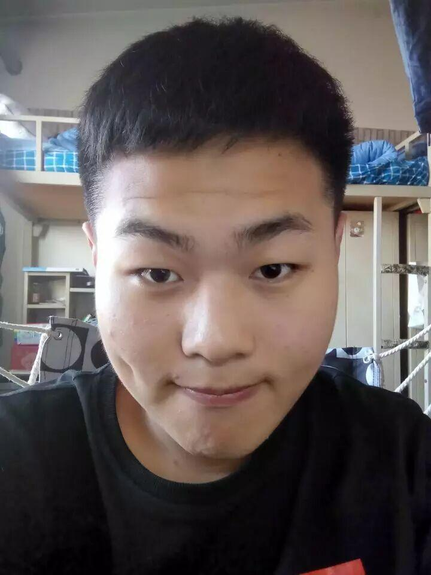
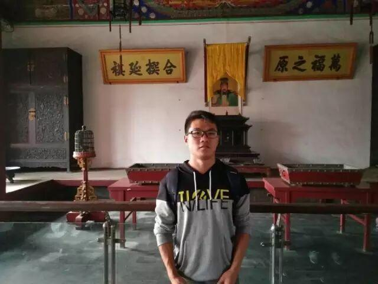

最美电协 组织部篇

所谓组织部
组织部：负责社团活动场地布置，及时反馈活动中的问题，做好
各部间的协调工作；组织领导社团开展大型高品位活动；负责本社团的后勤保障工作，负责外出实践活动时的食宿安排等事宜。（转载自百度文库）
那些可爱的人们
董辉，信息科学与工程学院通信一班班长，电协组织部部长。
部长寄语：希望组织部的大家一起努力，一起为电协的建设努力，打造沈理最美组织部，最美电协！你们都是好样的！
信息院通信一班李逸滢，平时喜欢画画、演讲、主持以及跆拳道，希望能和组织部的大家在大学四年里留下美好的回忆~

我叫王枭，不精通各种语言，尤其Java，性别男，爱好女，QQ417401901，电话13940147672，喜欢我就点我吧！
李雯夷，16级理学院光电信息科学与工程，人送外号光电小可爱。
我叫邵凯，是通信1班班长，希望能够在组织部得到锻炼
个人爱好唱歌，跑步，性格比较开朗活泼，爱交朋友，另外借此机会征婚。
陈丽香，喜欢足球，现在是校女足的一员，擅长广播主持演讲朗诵和策划。
大家好，所谓风流倜傥，人见人爱，才高八斗，玉树临风，迷死人不偿命的当然不是我了，我是才疏学浅，含蓄低调，即不是学霸也不是颜值担当的朴素大学生一枚，本人活泼开朗，善于交朋好友，目前单身，如有妹子看中请加我QQ：1776474207
李杰，汽车与交通学院，车辆工程专业，兴趣爱好：热爱踢球，性格特点：活泼跳脱，所在电协部门：组织部，性格稍微有点女汉子但依然是妹子一枚呢。
李昊，江湖人称李日天，早年属于半个体育生，精通各类体育项目，属实肢发达头脑简单，后放弃体育训练，于是现在除了颜值之外一无是处。

刘佳畅，英文缩写 l j c，本人长相没特点，性格有特点，身体健康，无不良嗜好，各个部位运作正常。
（以上顺序无先后之分）

编辑：信息部 关聪

扫描二维码
关注更多精彩